Change analysis for Malaysia for PRIMAP-hist v2.8_final compared to
v2.7_final
This changelog is published under the creative commons non-commercial
share alike license. For more information see creativecommons.org.
Overview over
emissions by sector and gas
The following figures show the aggregate national total emissions
excluding LULUCF AR6GWP100 for the country reported priority scenario.
The dotted lines show the v2.7_final data.
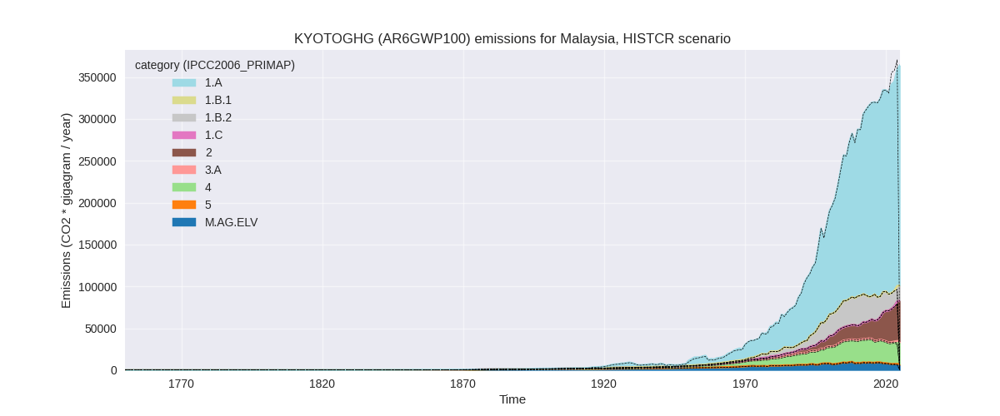
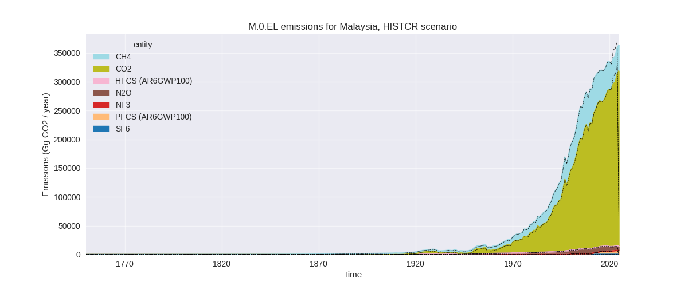
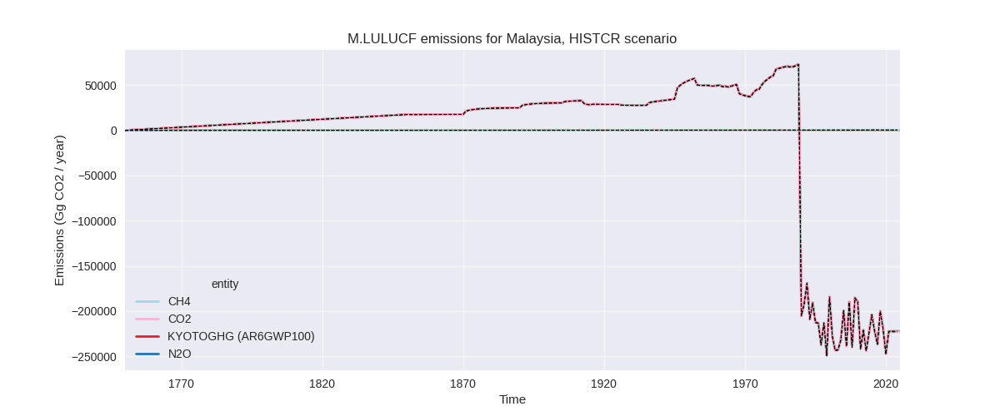
The following figures show the aggregate national total emissions
excluding LULUCF AR6GWP100 for the third party priority scenario. The
dotted lines show the v2.7_final data.
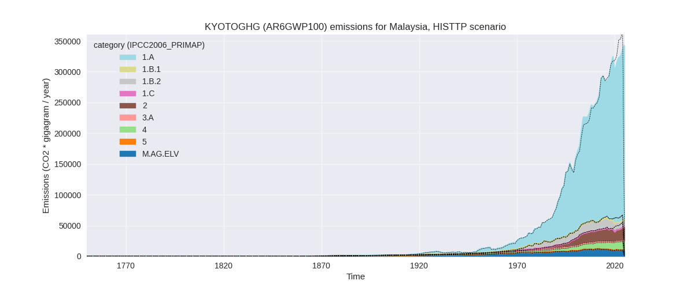
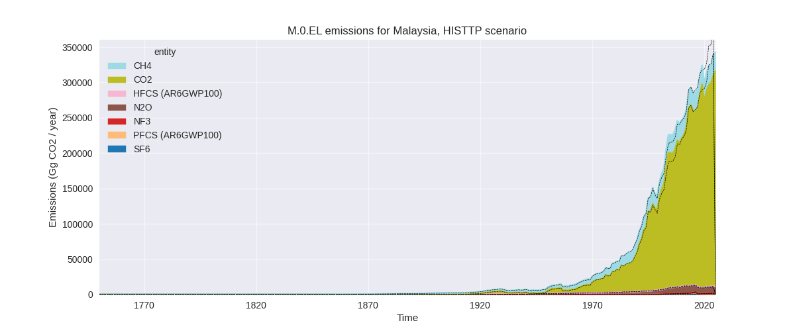
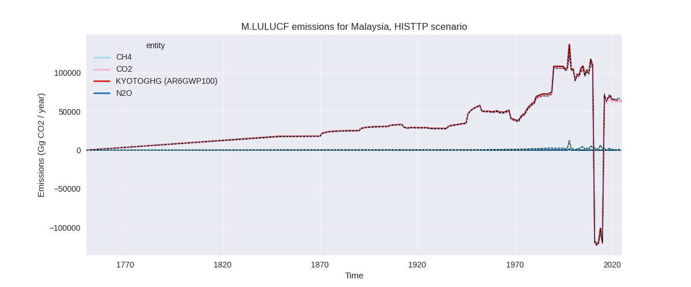
Used country reported data
The changelog with this information is available upon request for
non-commercial customers. Paying commercial customers will be provided
with the information.
Overview over changes
In the country reported priority scenario we have the following
changes for aggregate Kyoto GHG and national total emissions excluding
LULUCF (M.0.EL):
- Emissions in 2024 have changed by -3.3%% (-12049.07 Gg CO2 / year)
- Emissions in 1990-2024 have changed by -0.5%% (-1133.53 Gg CO2 / year)
In the third party priority scenario we have the following changes
for aggregate Kyoto GHG and national total emissions excluding LULUCF
(M.0.EL):
- Emissions in 2024 have changed by -8.8%% (-32443.31 Gg CO2 / year)
- Emissions in 1990-2024 have changed by -0.5%% (-1077.31 Gg CO2 / year)
Most
important changes per scenario and time frame
In the country reported priority scenario the
following sector-gas combinations have the highest absolute impact on
national total KyotoGHG (AR6GWP100) emissions in 2024
(up to 10 with either at least 0.2% impact on total emissions or at
least 20% change):
- 1: 1.A, CO2 with -16230.04 Gg CO2 / year (-6.0%, -4.4%)
- 2: 4, CH4 with 1890.51 Gg CO2 / year (8.1%, 0.5%)
- 3: 1.B.2, CH4 with 1247.17 Gg CO2 / year (9.0%, 0.3%)
In the country reported priority scenario the
following sector-gas combinations have the highest absolute impact on
national total KyotoGHG (AR6GWP100) emissions in
1990-2024 (up to 10 with either at least 0.1% impact on
total emissions or at least 10% change):
- 1: 1.A, CO2 with -1268.02 Gg CO2 / year (-0.7%, -0.5%)
In the third party priority scenario the following
sector-gas combinations have the highest absolute impact on national
total KyotoGHG (AR6GWP100) emissions in 2024 (up to 10
with either at least 0.2% impact on total emissions or at least 20%
change):
- 1: 1.A, CO2 with -22637.88 Gg CO2 / year (-7.6%, -6.1%)
- 2: 2, CO2 with -8187.34 Gg CO2 / year (-31.9%, -2.2%)
- 3: 1.B.2, CO2 with -850.33 Gg CO2 / year (-24.5%, -0.2%)
In the third party priority scenario the following
sector-gas combinations have the highest absolute impact on national
total KyotoGHG (AR6GWP100) emissions in 1990-2024 (up
to 10 with either at least 0.1% impact on total emissions or at least
10% change):
- 1: 1.A, CO2 with 1037.86 Gg CO2 / year (0.6%, 0.5%)
- 2: 2, CO2 with -1009.57 Gg CO2 / year (-7.3%, -0.5%)
- 3: 4, CH4 with -756.46 Gg CO2 / year (-9.3%, -0.3%)
- 4: 1.B.2, CO2 with -346.69 Gg CO2 / year (-10.2%, -0.2%)
Notes on data changes
The changelog with this information is available upon request for
non-commercial customers. Paying commercial customers will be provided
with the information.
Changes by sector and gas
For each scenario and time frame the changes are displayed for all
individual sectors and all individual gases. In the sector plot we use
aggregate Kyoto GHGs in AR6GWP100. In the gas plot we usenational total
emissions without LULUCF.
country reported scenario
2024
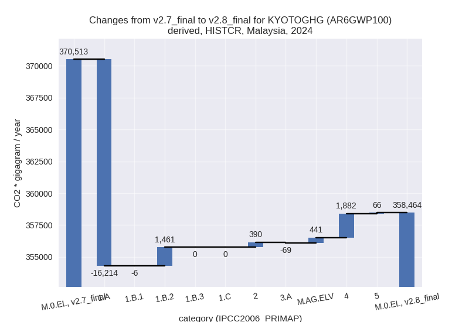
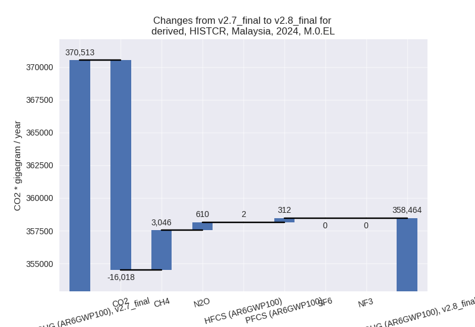
1990-2024
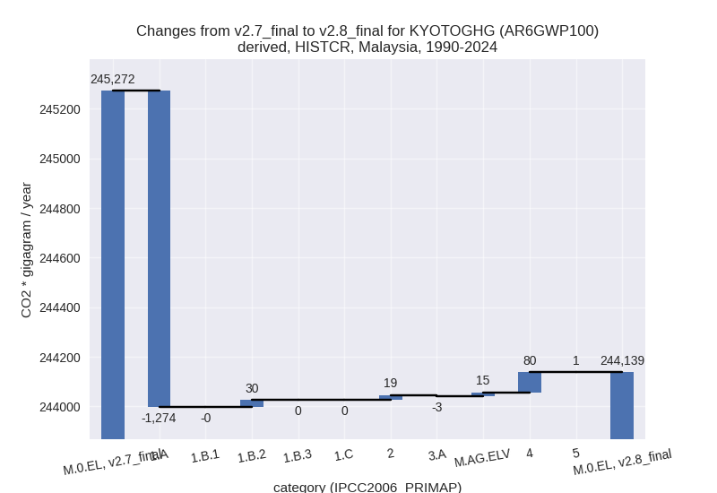
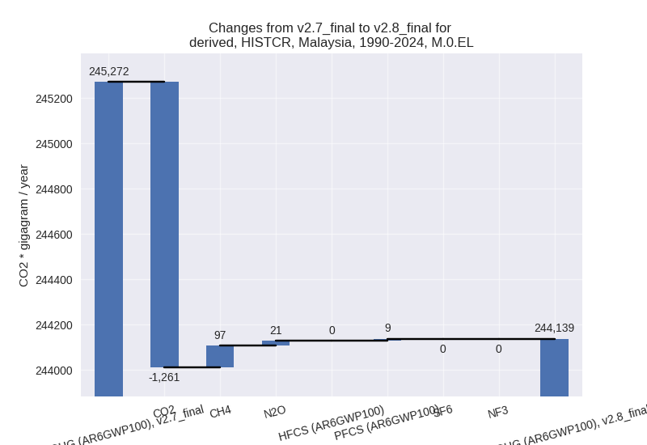
third party scenario
2024
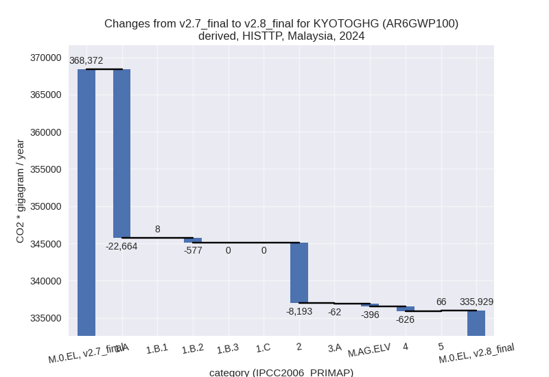
1990-2024
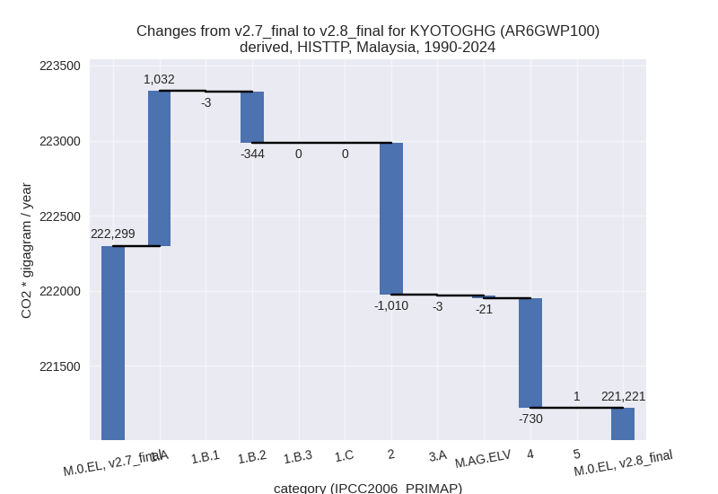
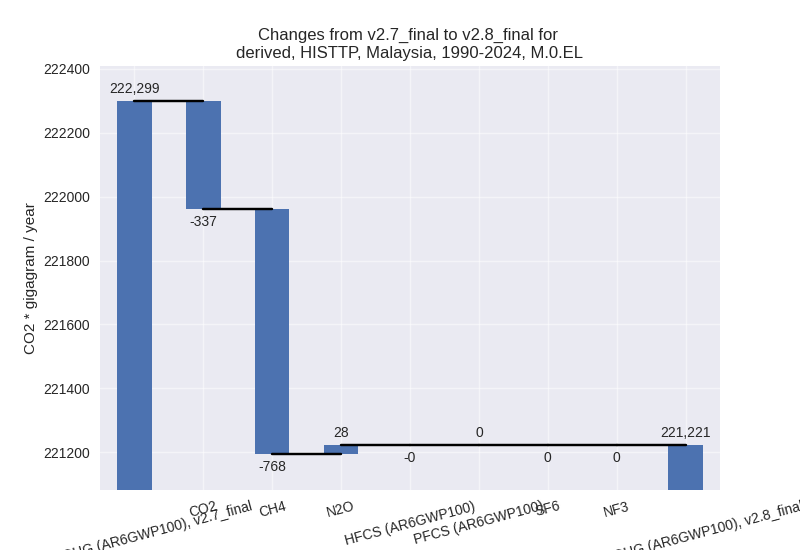
Detailed changes for the
scenarios:
country reported scenario
(HISTCR):
Most important changes
per time frame
For 2024 the following sector-gas combinations have
the highest absolute impact on national total KyotoGHG (AR6GWP100)
emissions in 2024 (up to 20 with either at least 0.2%
impact on total emissions or at least 20% change):
- 1: 1.A, CO2 with -16230.04 Gg CO2 / year (-6.0%), -4.4%)
- 2: 4, CH4 with 1890.51 Gg CO2 / year (8.1%), 0.5%)
- 3: 1.B.2, CH4 with 1247.17 Gg CO2 / year (9.0%), 0.3%)
- 4: 1.B.2, N2O with 2.07 Gg CO2 / year (28.9%), 0.0%)
For 1990-2024 the following sector-gas combinations
have the highest absolute impact on national total KyotoGHG (AR6GWP100)
emissions in 1990-2024 (up to 20 with either at least
0.1% impact on total emissions or at least 10% change):
- 1: 1.A, CO2 with -1268.02 Gg CO2 / year (-0.7%), -0.5%)
Changes in the main sectors for aggregate KyotoGHG (AR6GWP100)
are
- 1: Total sectoral emissions in 2022 are 267668.91
Gg CO2 / year which is 78.5% of M.0.EL emissions. 2024 Emissions have
changed by -5.1% (-14759.35 Gg CO2 /
year). 1990-2024 Emissions have changed by -0.6% (-1245.16 Gg CO2 / year). For 2024
the changes per gas
are:
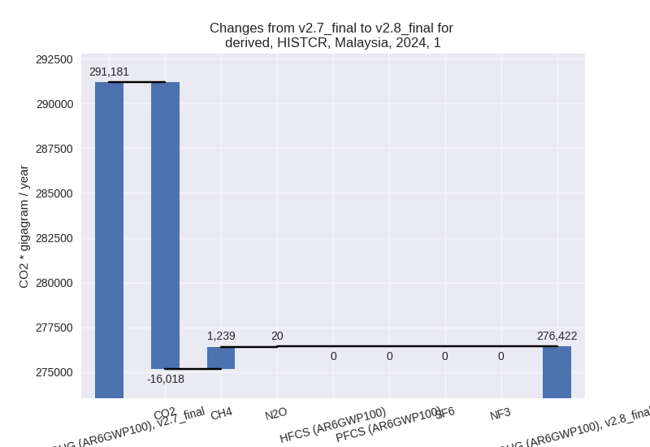
The changes come from the following subsectors:
- 1.A: Total sectoral emissions in 2022 are 248654.34
Gg CO2 / year which is 92.9% of category 1 emissions. 2024 Emissions
have changed by -5.9% (-16214.16 Gg
CO2 / year). 1990-2024 Emissions have changed by -0.7% (-1274.28 Gg CO2 / year). For 2024
the changes per gas
are:
There is no subsector information available in PRIMAP-hist.
- 1.B.1: Total sectoral emissions in 2022 are 32.64
Gg CO2 / year which is 0.0% of category 1 emissions. 2024 Emissions have
changed by -13.5% (-5.99 Gg CO2 /
year). 1990-2024 Emissions have changed by -1.4% (-0.44 Gg CO2 / year). For 2024 the
changes per gas
are:
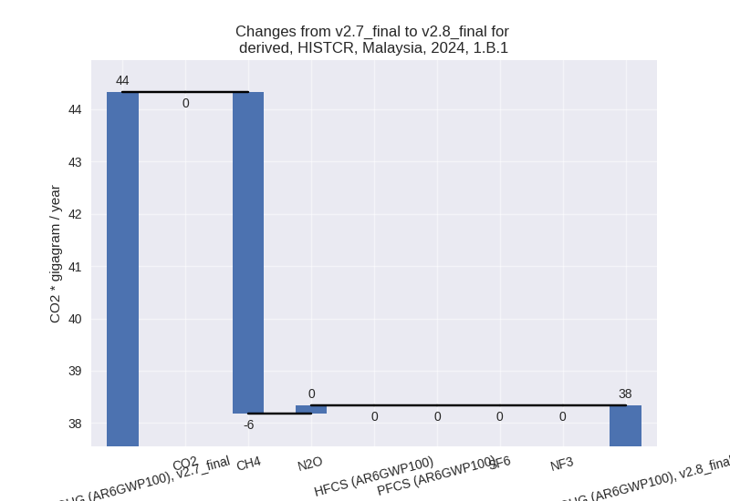
There is no subsector information available in PRIMAP-hist.
- 1.B.2: Total sectoral emissions in 2022 are
18981.93 Gg CO2 / year which is 7.1% of category 1 emissions. 2024
Emissions have changed by 8.6%
(1460.81 Gg CO2 / year). 1990-2024 Emissions have changed by 0.1% (29.55 Gg CO2 / year). For 2024 the
changes per gas
are:
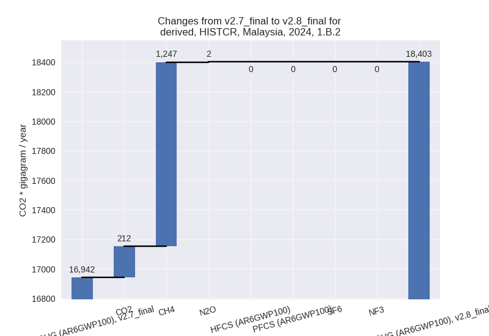
There is no subsector information available in PRIMAP-hist.
- 2: Total sectoral emissions in 2022 are 39698.99 Gg
CO2 / year which is 11.6% of M.0.EL emissions. 2024 Emissions have
changed by 0.8% (389.98 Gg CO2 /
year). 1990-2024 Emissions have changed by 0.1% (19.00 Gg CO2 / year).
- M.AG: Total sectoral emissions in 2022 are 8168.10
Gg CO2 / year which is 2.4% of M.0.EL emissions. 2024 Emissions have
changed by 4.8% (372.10 Gg CO2 /
year). 1990-2024 Emissions have changed by 0.1% (11.14 Gg CO2 / year). For 2024 the
changes per gas
are:
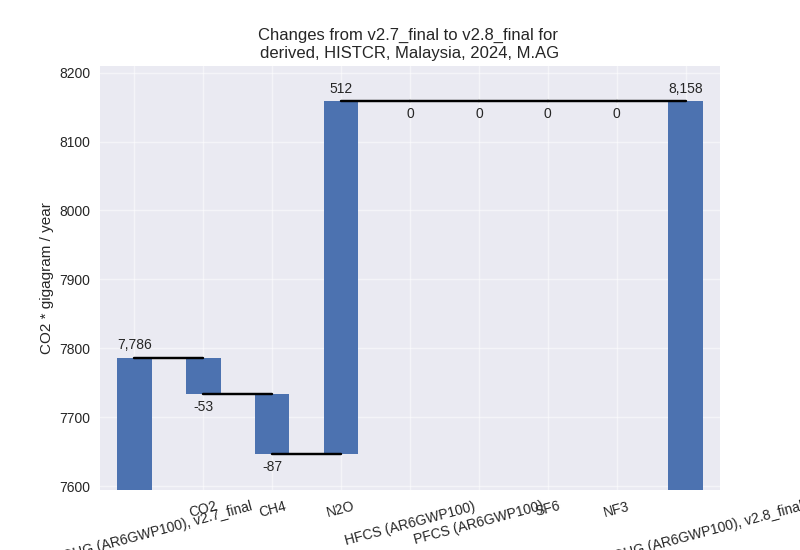
The changes come from the following subsectors:
- 3.A: Total sectoral emissions in 2022 are 1512.79
Gg CO2 / year which is 18.5% of category M.AG emissions. 2024 Emissions
have changed by -4.5% (-69.02 Gg CO2
/ year). 1990-2024 Emissions have changed by -0.2% (-3.37 Gg CO2 / year). For 2024 the
changes per gas
are:
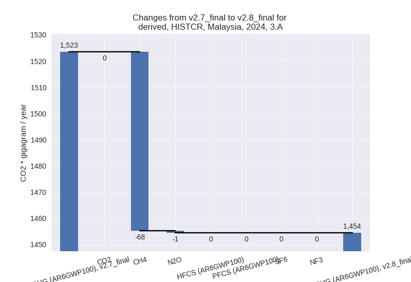
There is no subsector information available in PRIMAP-hist.
- M.AG.ELV: Total sectoral emissions in 2022 are
6655.30 Gg CO2 / year which is 81.5% of category M.AG emissions. 2024
Emissions have changed by 7.0%
(441.13 Gg CO2 / year). 1990-2024 Emissions have changed by 0.2% (14.51 Gg CO2 / year). For 2024 the
changes per gas
are:
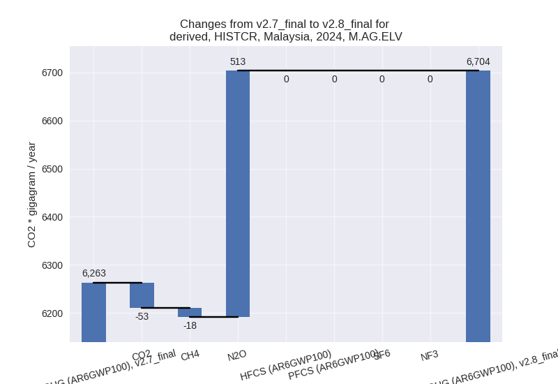
There is no subsector information available in PRIMAP-hist.
- 4: Total sectoral emissions in 2022 are 24635.91 Gg
CO2 / year which is 7.2% of M.0.EL emissions. 2024 Emissions have
changed by 7.9% (1881.86 Gg CO2 /
year). 1990-2024 Emissions have changed by 0.4% (80.43 Gg CO2 / year). For 2024 the
changes per gas
are:
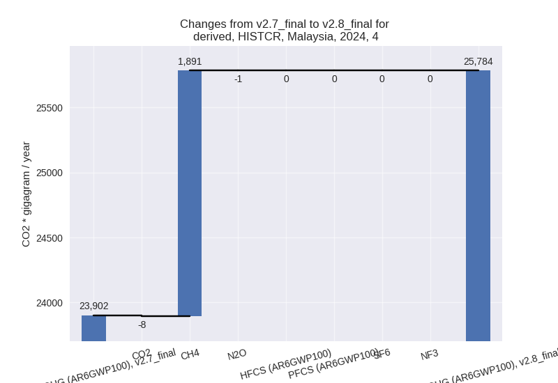
- 5: Total sectoral emissions in 2022 are 821.85 Gg
CO2 / year which is 0.2% of M.0.EL emissions. 2024 Emissions have
changed by 7.8% (66.34 Gg CO2 /
year). 1990-2024 Emissions have changed by 0.1% (1.06 Gg CO2 / year). For 2024 the
changes per gas
are:
third party scenario (HISTTP):
Most important changes
per time frame
For 2024 the following sector-gas combinations have
the highest absolute impact on national total KyotoGHG (AR6GWP100)
emissions in 2024 (up to 20 with either at least 0.2%
impact on total emissions or at least 20% change):
- 1: 1.A, CO2 with -22637.88 Gg CO2 / year (-7.6%), -6.1%)
- 2: 2, CO2 with -8187.34 Gg CO2 / year (-31.9%), -2.2%)
- 3: 1.B.2, CO2 with -850.33 Gg CO2 / year (-24.5%), -0.2%)
For 1990-2024 the following sector-gas combinations
have the highest absolute impact on national total KyotoGHG (AR6GWP100)
emissions in 1990-2024 (up to 20 with either at least
0.1% impact on total emissions or at least 10% change):
- 1: 1.A, CO2 with 1037.86 Gg CO2 / year (0.6%), 0.5%)
- 2: 2, CO2 with -1009.57 Gg CO2 / year (-7.3%), -0.5%)
- 3: 4, CH4 with -756.46 Gg CO2 / year (-9.3%), -0.3%)
- 4: 1.B.2, CO2 with -346.69 Gg CO2 / year (-10.2%), -0.2%)
Changes in the main sectors for aggregate KyotoGHG (AR6GWP100)
are
- 1: Total sectoral emissions in 2022 are 279634.88
Gg CO2 / year which is 86.6% of M.0.EL emissions. 2024 Emissions have
changed by -7.4% (-23233.00 Gg CO2 /
year). 1990-2024 Emissions have changed by 0.4% (685.22 Gg CO2 / year). For 2024 the
changes per gas
are:
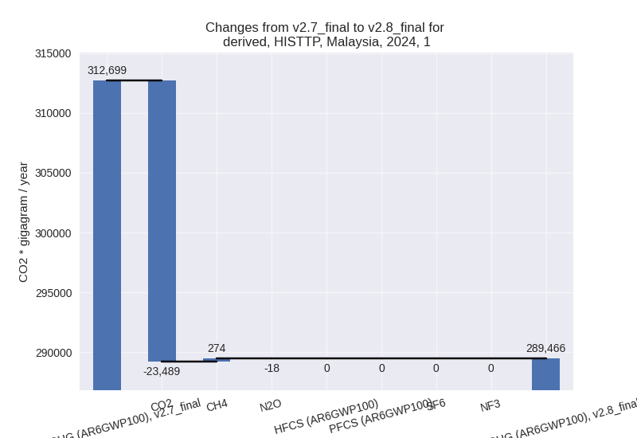
The changes come from the following subsectors:
- 1.A: Total sectoral emissions in 2022 are 268076.87
Gg CO2 / year which is 95.9% of category 1 emissions. 2024 Emissions
have changed by -7.5% (-22664.02 Gg
CO2 / year). 1990-2024 Emissions have changed by 0.6% (1031.61 Gg CO2 / year). For 2024 the
changes per gas
are:
There is no subsector information available in PRIMAP-hist.
- 1.B.1: Total sectoral emissions in 2022 are 645.80
Gg CO2 / year which is 0.2% of category 1 emissions. 2024 Emissions have
changed by 1.1% (8.18 Gg CO2 /
year). 1990-2024 Emissions have changed by -0.3% (-2.76 Gg CO2 / year).
- 1.B.2: Total sectoral emissions in 2022 are
10912.22 Gg CO2 / year which is 3.9% of category 1 emissions. 2024
Emissions have changed by -5.2%
(-577.15 Gg CO2 / year). 1990-2024 Emissions have changed by -2.6% (-343.63 Gg CO2 / year). For 2024
the changes per gas
are:
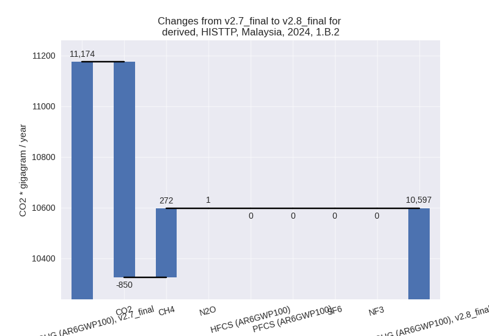
For 1990-2024 the changes per gas
are:
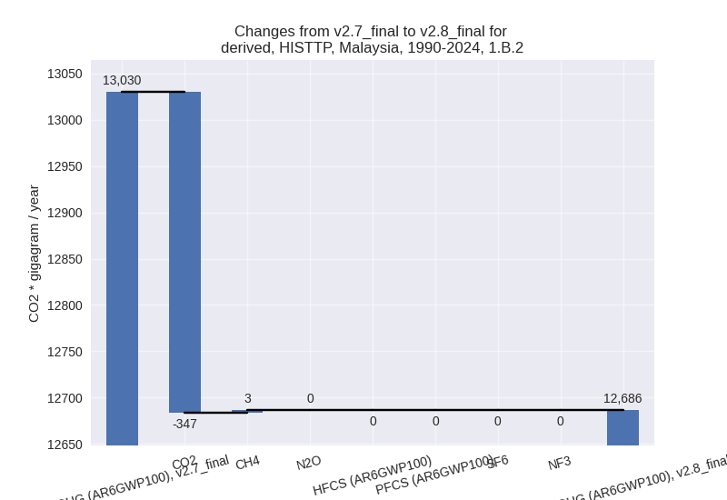
There is no subsector information available in PRIMAP-hist.
- 2: Total sectoral emissions in 2022 are 18625.68 Gg
CO2 / year which is 5.8% of M.0.EL emissions. 2024 Emissions have
changed by -27.8% (-8192.77 Gg CO2 /
year). 1990-2024 Emissions have changed by -6.3% (-1010.23 Gg CO2 / year). For 2024
the changes per gas
are:
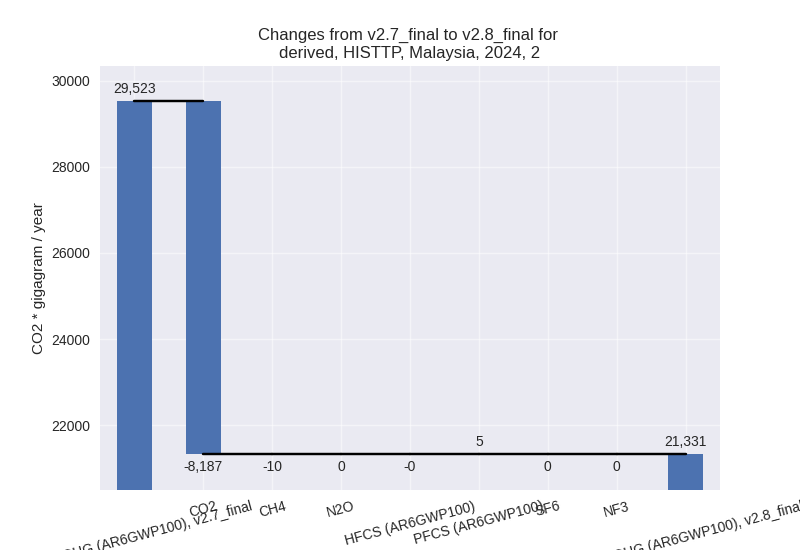
For 1990-2024 the changes per gas
are:
- M.AG: Total sectoral emissions in 2022 are 11359.32
Gg CO2 / year which is 3.5% of M.0.EL emissions. 2024 Emissions have
changed by -3.9% (-457.40 Gg CO2 /
year). 1990-2024 Emissions have changed by -0.2% (-23.80 Gg CO2 / year). For 2024 the
changes per gas
are:
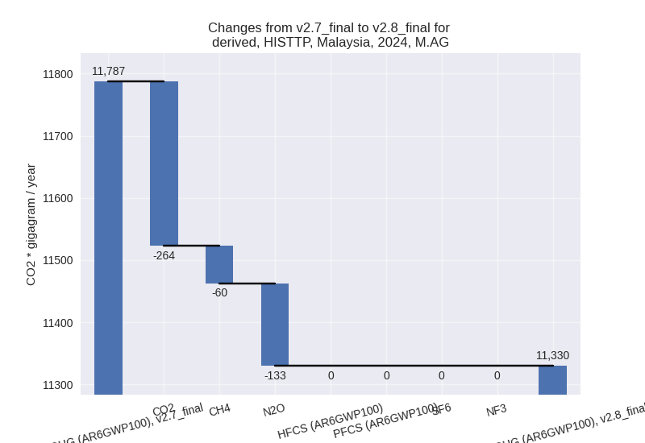
The changes come from the following subsectors:
- 3.A: Total sectoral emissions in 2022 are 2019.04
Gg CO2 / year which is 17.8% of category M.AG emissions. 2024 Emissions
have changed by -3.1% (-61.73 Gg CO2
/ year). 1990-2024 Emissions have changed by -0.1% (-3.16 Gg CO2 / year). For 2024 the
changes per gas
are:
There is no subsector information available in PRIMAP-hist.
- M.AG.ELV: Total sectoral emissions in 2022 are
9340.28 Gg CO2 / year which is 82.2% of category M.AG emissions. 2024
Emissions have changed by -4.0%
(-395.67 Gg CO2 / year). 1990-2024 Emissions have changed by -0.2% (-20.65 Gg CO2 / year). For 2024 the
changes per gas
are:
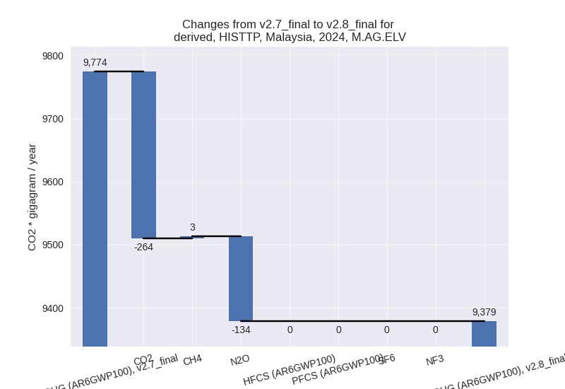
There is no subsector information available in PRIMAP-hist.
- 4: Total sectoral emissions in 2022 are 12315.38 Gg
CO2 / year which is 3.8% of M.0.EL emissions. 2024 Emissions have
changed by -4.6% (-626.48 Gg CO2 /
year). 1990-2024 Emissions have changed by -8.5% (-729.56 Gg CO2 / year). For 2024
the changes per gas
are:
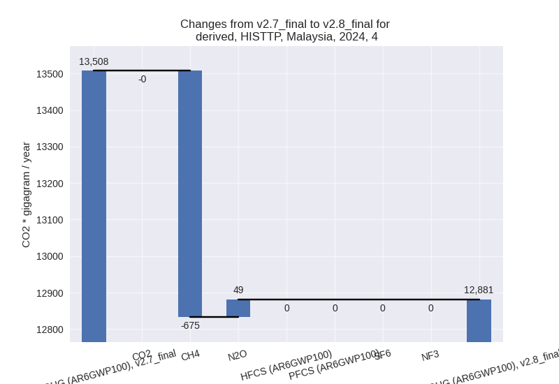
For 1990-2024 the changes per gas
are:
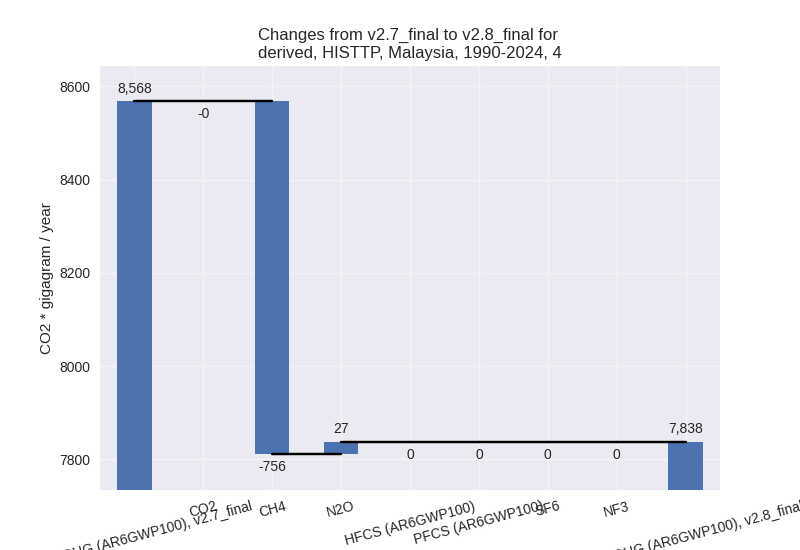
- 5: Total sectoral emissions in 2022 are 821.85 Gg
CO2 / year which is 0.3% of M.0.EL emissions. 2024 Emissions have
changed by 7.8% (66.34 Gg CO2 /
year). 1990-2024 Emissions have changed by 0.1% (1.06 Gg CO2 / year). For 2024 the
changes per gas
are:
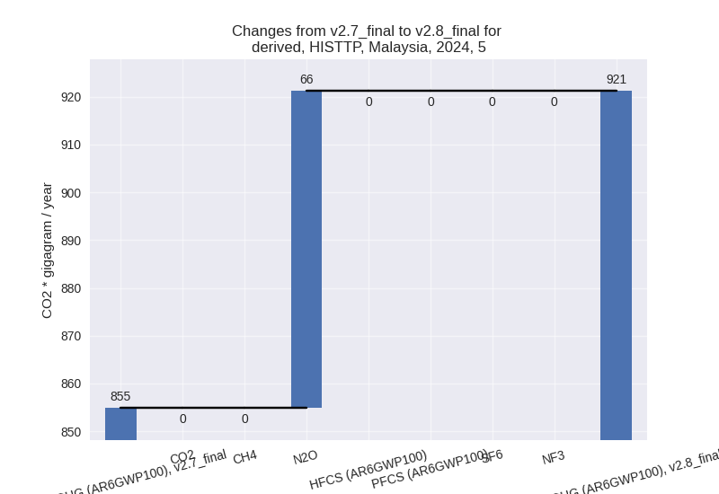